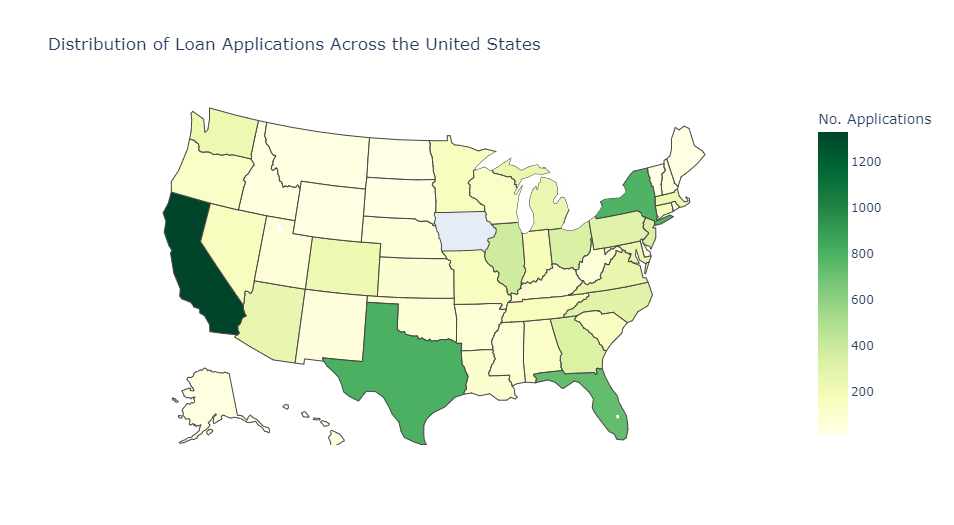
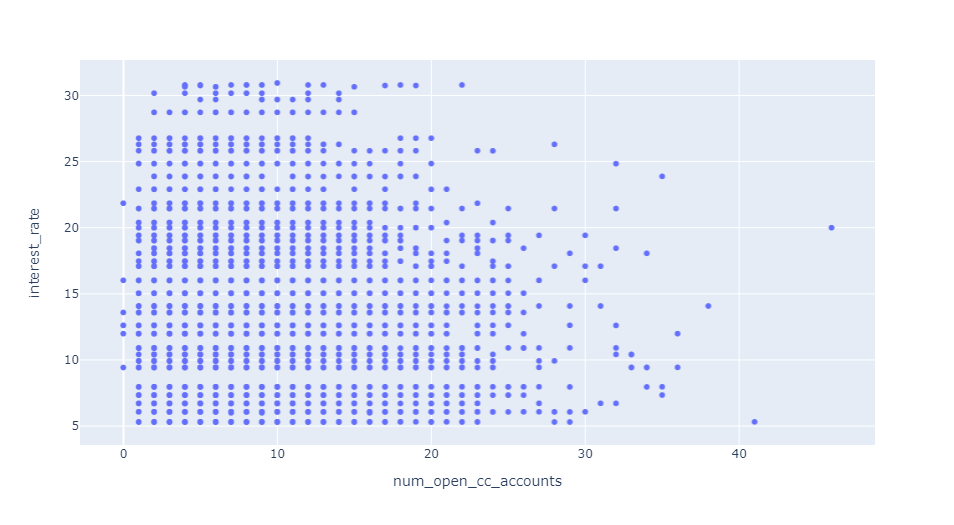
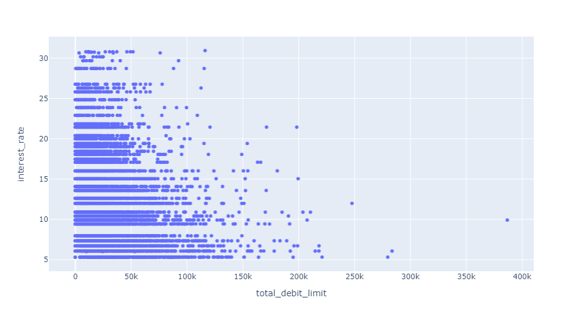
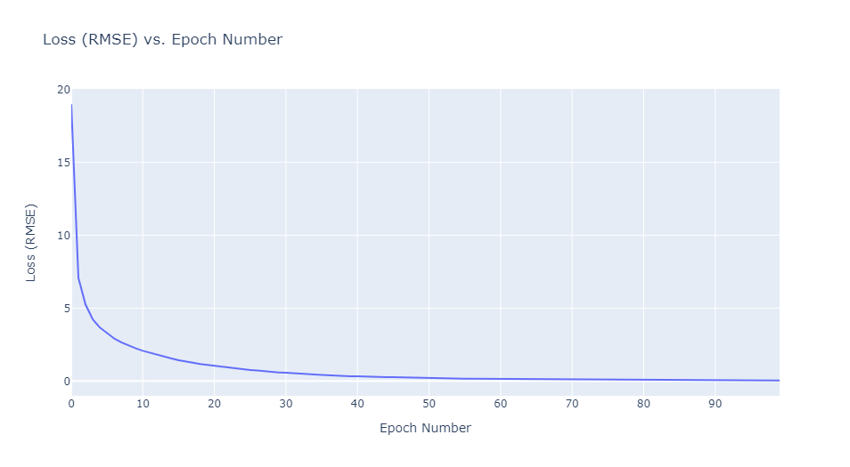

stout case studies
Case studies done for the interview process at Stout, a global investment bank and advisory firm.
Case Study 1
This study has the goal of predicting interest rates using data from Lending Club, a peer-to-peer lending platform.
Data Set
The dataset used is a subset of anonymized loan applications from Lending Club. It can be found here. The only issue dealt with in using this data was a small number of missing values for some of the features.
EDA
Below are visualizations which give insight into the dataset, giving clues as to which approaches may be successful for our use case.
Geographic Loan Distribution

The number of loan applications per state looks to be roughly proportional to the
state population. Thus, we remove state from consideration. Keeping it in
the data would result in a large number of extra features after one-hot encoding, not
useful in interest prediction.
Interest Rate Distribution
 Interest rate follows what looks to be a rough beta distribution. The graph looks
to be missing bars, which led to the observation that interest rate is, in fact, a
categorical variable. This was confirmed online. This was also
confirmed by grouping
Interest rate follows what looks to be a rough beta distribution. The graph looks
to be missing bars, which led to the observation that interest rate is, in fact, a
categorical variable. This was confirmed online. This was also
confirmed by grouping sub_grade in the data, and displaying interest rates. Part
of that table is shown below.
| Sub-grade | Interest Rates |
|---|---|
| A1 | [5.23, 5.31] |
| A2 | [6.08, 6.07, 6.0] |
| A3 | [6.72, 6.71] |
| A4 | [7.34, 7.35] |
| A5 | [7.96, 7.97] |
sub_grade needs to be removed from our feature set. In a practical application, if we
have access to sub-grade, a simple rule-based model will yield near perfect
predictions as the mapping to interest rate is almost one to one. The decision to
leave or keep this feature would depend on the model use case in real life. In
this case study, I exclude it, as a ML model learning a near one-to-one mapping
is wasteful (and frankly boring), and it is much more interesting to try and use the
rest of the rich feature set to predict interest rates.
A Note on application_type
 85% of applications are individual. This makes sense, as the features
related to joint applications,
85% of applications are individual. This makes sense, as the features
related to joint applications, annual_income_joint, verification_income_joint,
debt_to_income_joint all had around 85% of their values missing.
Identifying Possible Relations
 
There look to be weak and possibly non-linear relations between both
num_open_cc_accounts and total_debt_limit and interest_rate.
Preprocessing
Preprocessing of the overall dataset consisted of the following:
- Deletion of bloated/useless features
-
emp_title: there are apx. 4500 of these titles. Not very insightful w/o further processing -
state: see EDA
-
- Deletion of grade-related features
-
gradeandsub_grade: see EDA
-
- One-hot Encoding of Categorical Features
- Allows model to work with non-numerical data
- Train/Test Split
- 20% of the data used as a validation set
- Given more time, would evaluate models using cross-validation
These pre-processing steps were performed for both the train set, and test set, but separately as to not introduce unintended biases to the model:
- Null Value Replacement
- For values in the columns
{'emp_length', 'debt_to_income', 'annual_income_joint', 'debt_to_income_joint'}, null values were replaced with the feature mean - For values in the columns
{'months_since_last_delinq', 'months_since_90d_late', 'months_since_last_credit_inquiry'}these were filled with a number of months equivalent to 150 years, much longer than a normal human lifespan - All other values were filled with 0
- For values in the columns
- Standardization
- Training sets were standardized
Interest Rate Prediction as a Classification Problem
Initially, I approached this a classfication problem with discrete interest rates as classes. The below table shows results on the validation set (0-1 Loss). Evidently, this approach was a spectacular failure.
| Model | Validation Score |
|---|---|
| SVC | 11.70% |
| KNN(k=3) | 5.75% |
| NN | 4.05% |
Neural net used linear layers with ReLU activation functions.
Interest Rate Prediction as a Regression Problem

I then approached the problem as a regression. This proved more fruitful. I only had the time to run one approach, a NN, which resulted in a RMSE on the validation set of 2.97 percentage points. With more time I would run more regression models to try and find a better solution. The RMSE while training is shown above.
Including sub_grade and grade

To show the near-direct relation between sub_grade and grade with interest rate, I
ran the NN including these features. As expected, including sub_grade and grade greatly improved model RMSE,
resulting in a validation RMSE of 0.407 percentage points. The RMSE while training is shown above.
Assumptions Made
-
sub_gradeandgradeshould not be used in interest rate prediction - All features required to accurately predict interest rate are contained within the dataset
- The treatment of null-values as described in the pre-processing section results in good model performance. This is something else I would experiment with given time
Case Study 2
This case study involved the calculation of several statistics on order data from customers.
Total Revenue
 Total revenue dipped in 2016 before rebounding in 2017.
Total revenue dipped in 2016 before rebounding in 2017.
New & Existing Customer Revenue Statistics
 For 2016 and 2017 (the years where we can tell which customers are new), we see that
the majority of revenue comes from new customers, rather than from existing customers. Depending on the industry, this data may either be expected or alarming.
For 2016 and 2017 (the years where we can tell which customers are new), we see that
the majority of revenue comes from new customers, rather than from existing customers. Depending on the industry, this data may either be expected or alarming.
New & Existing Customer Count Statistics
 We see a similar result to that of revenue. This store or business has performs poorly
when it comes to customer retention.
We see a similar result to that of revenue. This store or business has performs poorly
when it comes to customer retention.
Revenue Lost to Customer Attrition
Between 2016 and 2017, this store or business lost $4.844M in revenue due to customer attrition. Cannot calculate this statistic for 2015-2016, as it cannot be split into new and existing customers.